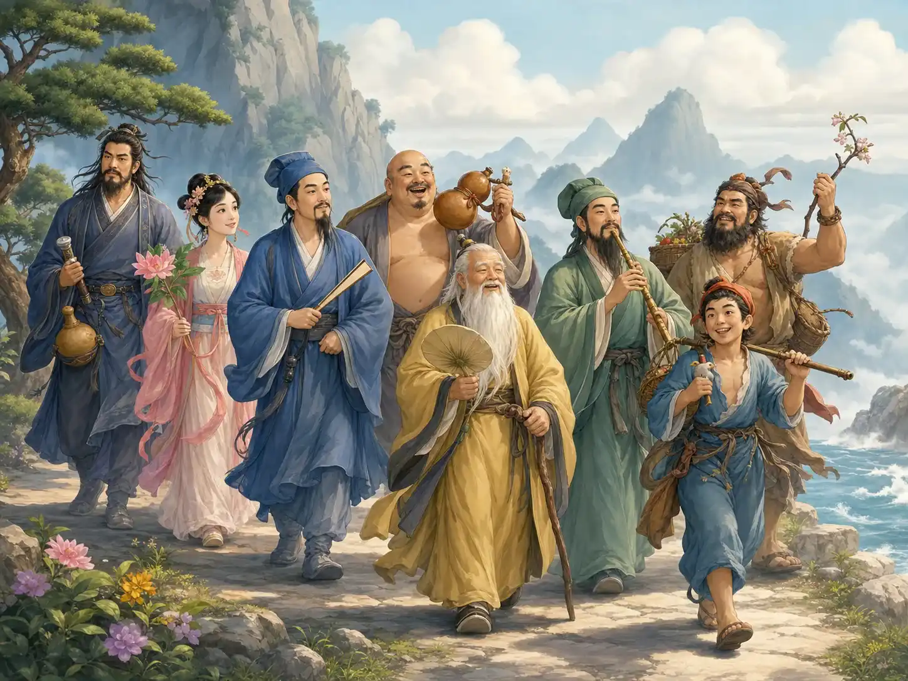

道教：追求快乐飞翔的神仙
Daoism: Seeking the Joyful Flying Immortals
Page 1
很多人记住道教，是从山里的炉火开始的
Many People Remember Daoism Through a Fire Burning in the Mountains

A mountain Daoist watches the furnace, hoping to make an elixir that could help people live longer.
很多人一想到道教，脑子里先跳出来的画面，就是山里一位老道士，守着炉火，想炼出仙丹。
这个画面会被记很久，是因为它一下就把道教最迷人的问题摆出来了：人能不能活得更久一点？能不能轻一点、自由一点，甚至像故事里的神仙那样飞起来？
所以道教从来不只是“有很多神仙故事”。
它真正抓住人的地方，是它一直在认真问：一个人，可不可以把自己活成另一种样子？
When many people think of Daoism, the first picture in their minds is an old master in the mountains watching a furnace and hoping to make an elixir.
This picture lasts because it shows Daoism's most fascinating question at once: can a person live longer, feel lighter, and become freer, maybe even like the immortals in stories?
So Daoism was never only "a religion with many magical tales."
Its deeper pull comes from one serious question: can a human being slowly become a different kind of self?
Page 2
可它最早，其实先是一种看世界的方法
But at First, It Was a Way of Looking at the World
道教最早的根，常常会让人想到An ancient Chinese thinker linked with the Dao De Jing and early Daoist ideas.和《A short classic linked to Laozi that talks about living with the natural way of the world.》。
这里面最重要的意思，不是教人追热闹的法术，而是提醒人：春天来了，草会长；水会往低处流；有些事情你越硬推，反而越乱。
也就是说，天地本来就有自己的节奏。人如果能少一点硬拧，多一点顺着自然，也许反而会活得更稳。
后来，这种想法和养生、修炼、神仙故事慢慢合在一起，才变成了后来的道教。
The earliest roots of Daoism often lead back to An ancient Chinese thinker linked with the Dao De Jing and early Daoist ideas. and the A short classic linked to Laozi that talks about living with the natural way of the world..
Its central idea is not loud magic. It is a reminder that spring comes and grass grows, water moves downhill, and some things become worse when we try to force them too hard.
In other words, the world already has its own rhythm. If people fight it a little less and live with it a little more, life may become steadier.
Later, this way of thinking slowly joined with health practices, self-training, and stories of immortals. That mixture became the Daoism people knew later.
Page 3
道教最吸引人的地方，是神仙原来也可能是人
One Powerful Idea in Daoism Is That Immortals May Once Have Been Human

Stories of the A famous group of Daoist immortals in Chinese stories, each with a different personality and background. make many people feel that immortals were not always born in the sky.
道教里最会让人着迷的一点，就是很多神仙并不是一开始就在天上。
他们原来也可能是普通人。后来经过修炼、经历、考验，才慢慢成了神仙。
最有名的例子就是八仙。有人像将军，有人像书生，有人像普通姑娘。他们看起来并不都一样，也不是都高高在上。
这会给人一种很特别的感觉：如果神仙也可能从人修来，那普通人是不是也可以一步一步，把自己活得更清明一点、更自在一点？
One of the most captivating ideas in Daoism is that many immortals were not always heavenly beings.
They may once have been ordinary people. Only later, through practice, experience, and testing, did they become immortals.
The best-known example is the A famous group of Daoist immortals in Chinese stories, each with a different personality and background.. One seems like a general, one like a scholar, one like an ordinary young woman. They do not all look the same, and they do not all feel far above the human world.
That gives people a powerful feeling: if immortals may begin as humans, then perhaps ordinary people can also change themselves step by step and live in a clearer, freer way.
Page 4
它安静的时候像深井，热闹的时候像一场戏
At Its Quietest, Daoism Feels Like a Deep Well. At Its Liveliest, It Feels Like a Stage.

A Daoist priest writes a talisman on yellow paper. For many children, this is the first moment Daoism feels truly mysterious.
有些道士在山里安安静静地打坐、调呼吸。可也有一些画面，会让小朋友一下看呆。
比如黄纸、朱砂、毛笔，还有飞快写出来的符。那些线条看起来不像平常的字，却会让人觉得：这里面好像有一种特别的力量。
所以道教很有意思。它一边很安静，像一个人慢慢把心收回来；一边又很热闹，有法坛、咒语、符纸和各种神仙故事。
也正因为这样，它一直不像只有一种样子。它可以是山里的风，也可以是庙里的灯。
Some Daoists sit quietly in the mountains, breathing slowly and training the mind. But other scenes can make children stop and stare at once.
Think of yellow paper, red cinnabar ink, a brush, and a talisman written at great speed. The marks do not look like ordinary writing, yet they make people feel that some special power is being called.
That is part of what makes Daoism so interesting. On one side, it is quiet, like a person slowly gathering the heart inward. On the other side, it is lively, with altars, chants, talismans, and stories of immortals.
Because of that, Daoism has never had only one shape. It can feel like mountain wind, and it can feel like temple light.
小结
In Summary
道教让人一直记得，不只是因为它有会飞的神仙。
更因为它一直在问一个很老、也很新的问题：人能不能把自己照看得更好一点，活得更轻一点，更自在一点，更接近天地自然一点？
Daoism stays in people's minds not only because it has flying immortals.
It also stays because it keeps asking an old and still-living question: can people care for themselves well enough to live more lightly, more freely, and a little closer to the rhythm of nature?